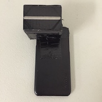
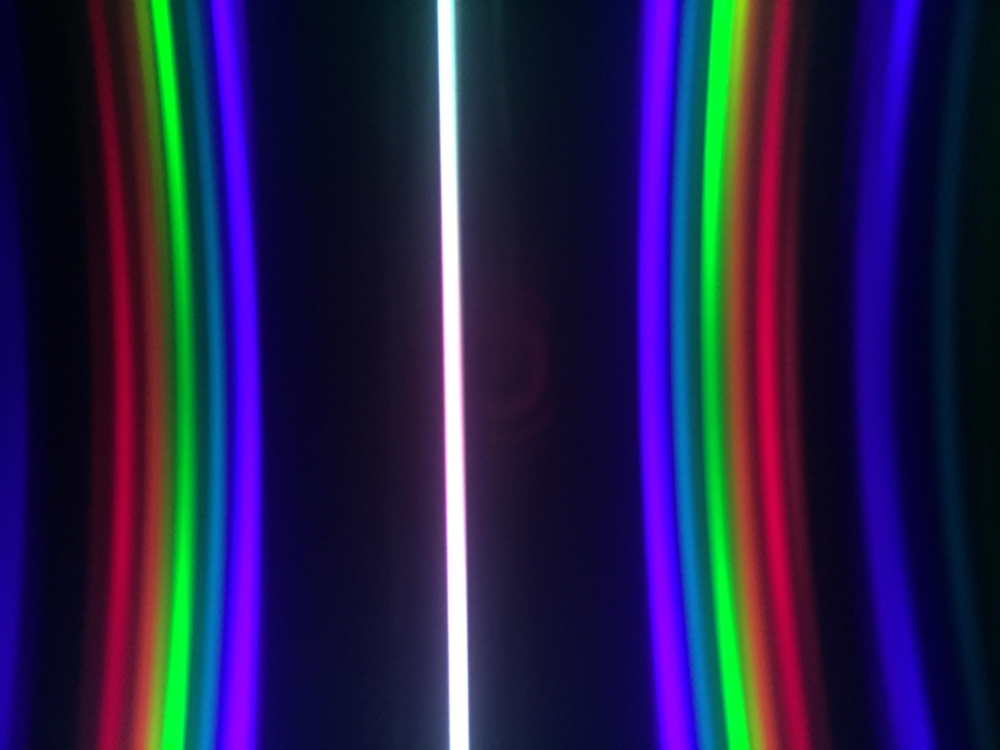
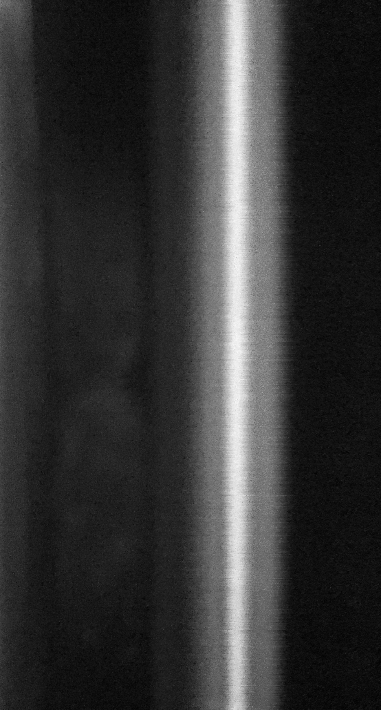
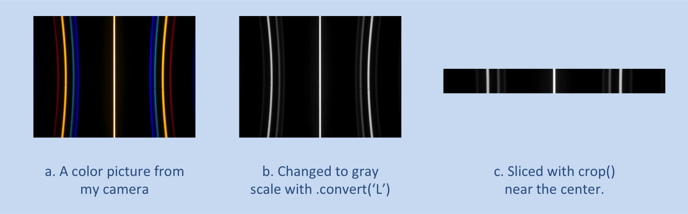
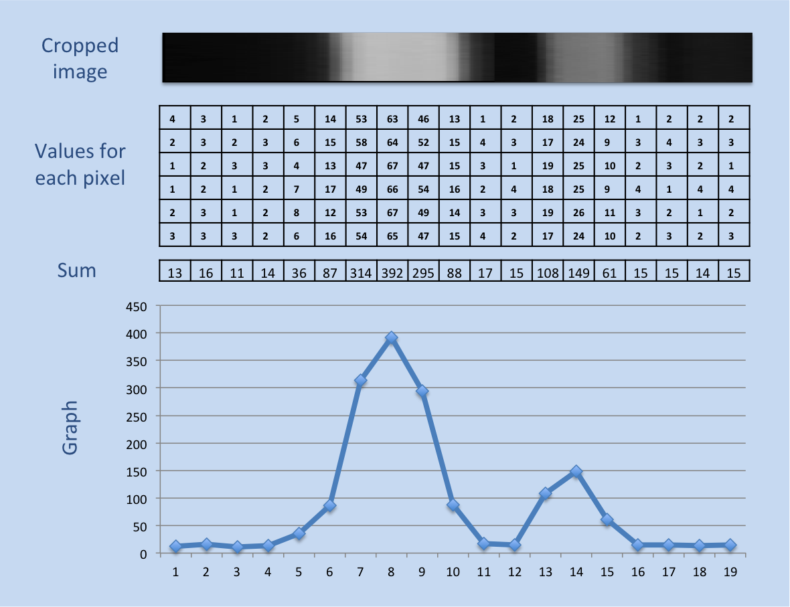
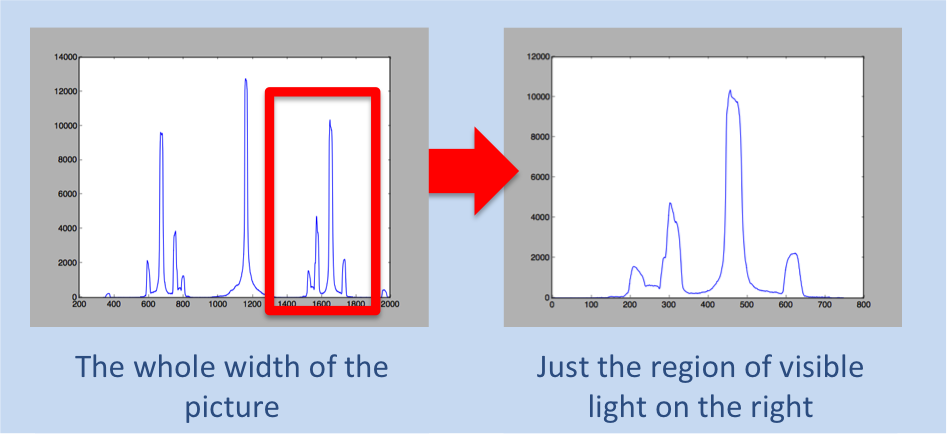
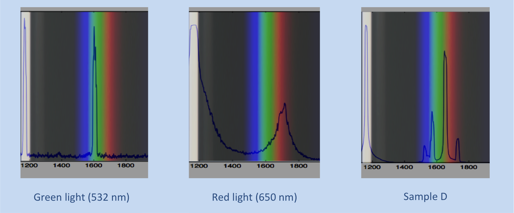
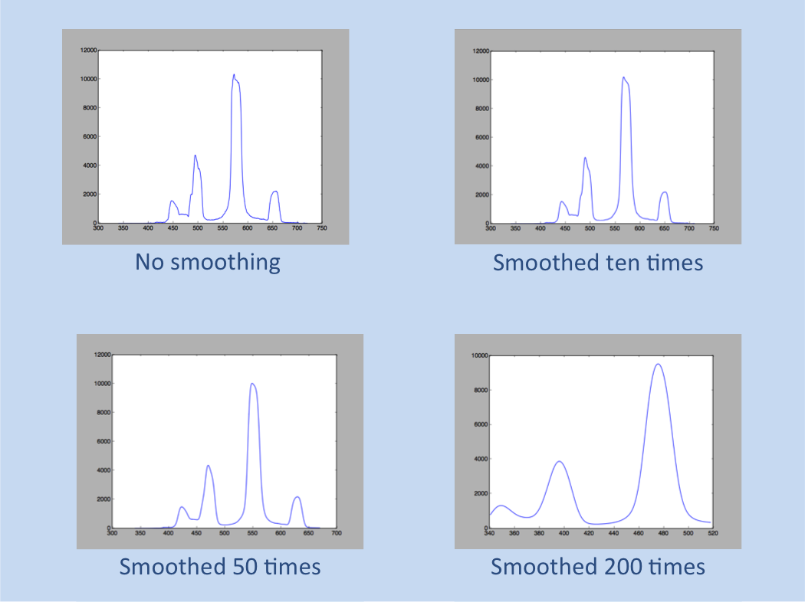
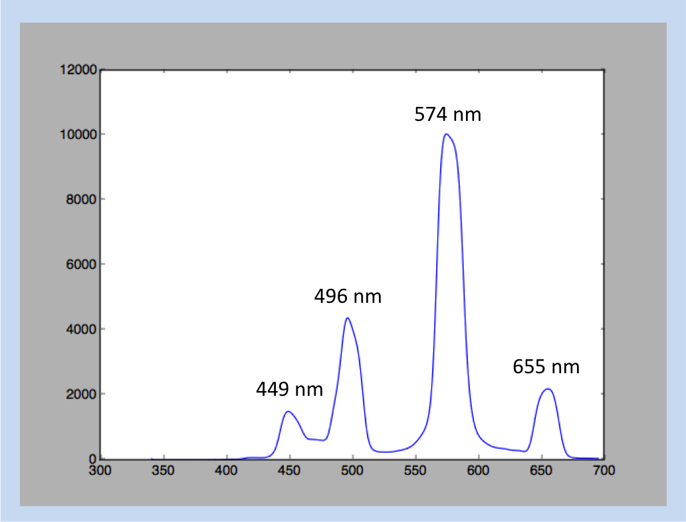

OVERVIEW
Generally speaking, the steps are as follows:
- Build the phone attachment
- Take the picture
- Convert the raw data to a useable array
- Try to optimize the data by straightening the curve (and then
give up)
- Take just a fraction of the data and turn it into a cool
histogram
- Use red and green LASERS to calibrate the data
- Compare the data to known spectra to determine the element
Building the Spectroscope
I based my design off the example from MIT Open Courses, and
modified it to fit my phone.
I found an ugly magenta phone case in a bargin bin for $3.
With a bit of (unnecessary) spray paint, I converted it to a more
reasonable and boring black.
I cut up a small piece of difraction grating, found in my
classroom but also avaible online for cheap. Or you could do what
MIT recommends and cut up a CD, although if you're like me you would
have to go out a buy a CD to cut up. No body has those things anymore.
Where's AOL Online when we need them?
I shortened the tube until I could see the full spectrum as
large as possible, around 2 cm long, I think. In one model (found
here), the tube was bent to the side to capture the rainbow from
just one side of the slit, but I thought it might be nice to have two
sides to get twice as much data. (Just kidding, I was too lazy to make
a slanted cut).
The final spectroscope looked like this:

Take the picture
I have a massive advantage as a physics teacher, because I have
access to the glowing tubes we use when investigating the
electromagnetic spectrum.
Surprisingly, the trickiest part of this part of this adventure
was finding a program to take pictures without compression.
"Oh no!" the internet says. "Nowadays compression algorithms are
so good that there is pratically no loss of information. There's no
reason you could ever want to deal with uncompressed data", they
say.
What they haven't considered is you might be a physics teacher
with a passing interest in astronomy and a desire to build your own
optical instruments, and that success requires a pixel-by-pixel analysis
of the data.
(Internet people thinking they know what you want grumble
grumble grumble multinational corporations cough cough apple cough
cough removing features from the default camera app grumble grumble
grumble)
Anyway, I eventually found a free app that would let me save my
pictures as tif files.
Here's what the raw data looked like:

Straightening the Data
You probably noticed that the lines above are curved and
wondered what I'm going to do about that. The answer turns out to be
"not a darn thing".
I did manage to straighten out the picture, and I had a good
time doing it. First I had to convert the picture to an array
(technically a list of lists, I think). Then I found the maximum
value for each row of data and fit a parabola to the data (I assumed
that the data is indeed quadratic, which it might not have been).
Using the line of best fit, I created a scale factor for each
row to shorten the top and bottom rows down to the same length of
the middle row
The end result looked like this:

So straight!
Alas, the actual data from the straightened picture was worse
than just taking data from the middle of the unstraightened pic. So
it goes.
Analyzing the Data
The data analysis goes like this:
Crop and Convert

Convert to a Histogram

Crop to the Interesting Region

Convert Pixel Positon to Wavelength

Note that the peaks appear at blue, green, yellow, and red, just like in the original
photo.
Find peaks


Match with elements
I haven't figured this out yet.